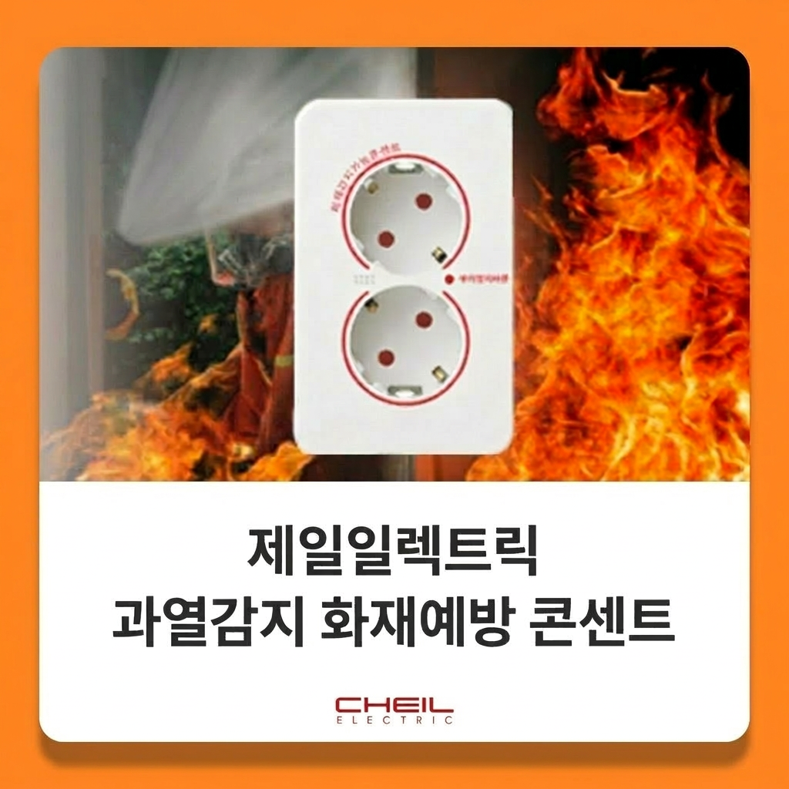
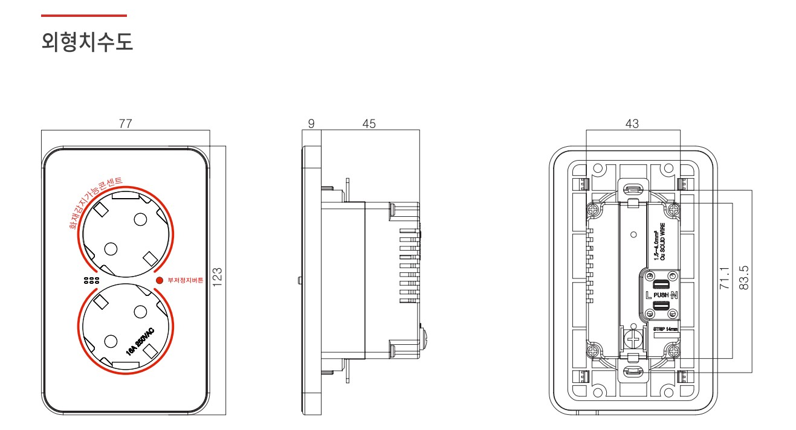
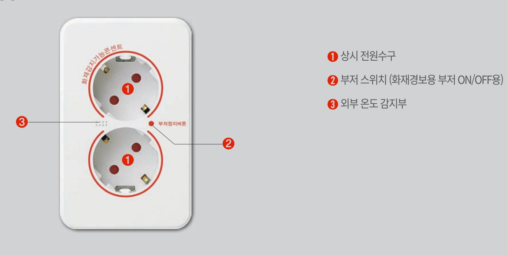
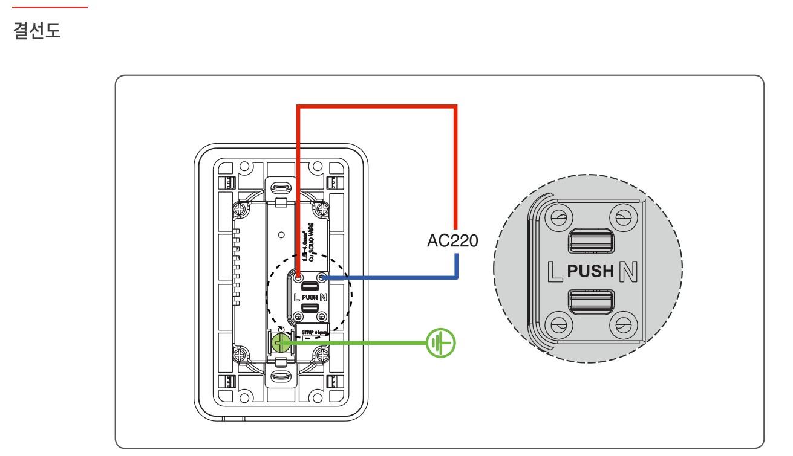

⚡
노후된 전기설비
전선 피복 손상, 배선 노후, 과부하 누적은 합선과 단락으로 이어질 수 있습니다. 오래된 설비는 “괜찮겠지”가 아니라 “먼저 확인해야 하는 대상”입니다.
콘센트 내·외부 온도를 감지하여 과열로 인한 화재 위험 발생 시 경보음으로 알려주는 화재예방 콘센트입니다.
난방기구 사용량이 증가하는 겨울철에는 전기화재 발생 위험이 높아집니다. 소개 자료에 따르면 전기화재는 전체 화재의 약 30%를 차지하며, 이 중 겨울철 발생률은 약 40%에 달합니다. 즉, 콘센트와 배선 주변의 작은 이상 신호를 먼저 감지하는 것이 중요합니다.
전선 피복 손상, 배선 노후, 과부하 누적은 합선과 단락으로 이어질 수 있습니다. 오래된 설비는 “괜찮겠지”가 아니라 “먼저 확인해야 하는 대상”입니다.
전기히터, 온풍기, 난방기기 사용이 늘어나는 시기에는 전선과 콘센트 주변 과열 위험도 함께 커집니다.
플러그 결합이 느슨하거나 먼지가 쌓이면 열이 발생할 수 있습니다. 작은 접촉 문제 하나가 큰 화재로 번질 수 있는 구간입니다.
이 제품의 핵심은 콘센트의 내·외부 온도를 감지하여 과열 및 화재 위험 시 경보음으로 먼저 알려주는 점입니다. 단순한 콘센트가 아니라, 전기화재 위험을 조기 인지하도록 돕는 안전 장치입니다.

부저 스위치 ON 상태로 출하되어 기본적으로 경보 기능이 활성화됩니다.
콘센트 내·외부 온도 60℃를 감지하면 과열 및 화재 위험으로 판단하고 경보음을 울립니다.
위험 요소가 제거되면 약 3분 후 또는 콘센트 내·외부 온도가 40℃ 이하로 떨어질 때 경보가 해제됩니다.
위험 상황을 확인한 뒤 부저 스위치를 눌러 경보음을 임시 정지할 수 있습니다.
제품 동작 흐름은 단순하고 실용적입니다. 위험을 감지하고, 경보를 울리고, 위험 제거 후 정상 상태로 복귀합니다. 복잡한 기술은 뒤에 숨기고, 중요한 건 현장에서 바로 이해되는 흐름입니다.
부저 스위치 ON 상태에서 콘센트가 정상적으로 대기합니다.
내·외부 온도 60℃ 도달 시 과열 및 화재 위험을 감지합니다.
부저음으로 위험 상황을 즉시 알리고, 필요 시 스위치로 임시 정지가 가능합니다.
위험 요소 제거 후 약 3분 또는 40℃ 이하에서 경보가 멈추고 정상 상태로 돌아갑니다.
제품 도입을 검토할 때는 “좋아 보이는가”보다 “설치 가능한가, 이해하기 쉬운가, 현장에 맞는가”가 더 중요합니다. 아래 이미지로 제품 외형과 구성 정보를 확인하실 수 있습니다.

설치 전 공간 및 마감 조건을 검토할 수 있도록 외형 치수를 확인할 수 있습니다.

감지부, 스위치 등 주요 구성 요소를 이해하기 쉽게 확인할 수 있습니다.

배선 연결 방식 검토에 도움이 되는 결선 정보를 확인할 수 있습니다.
전기 제품은 안전이 무엇보다 중요합니다. 특히 화재 예방 장치는 설치 조건과 사용 주의사항을 정확히 지키는 것이 핵심입니다.
화재 감지 및 복합 제어와 관련된 특허 진행 사항으로 제품의 신뢰성을 증명합니다.
화재 감지 가능한 온도 감응형 전류 공급기
화재 감응형 복합 제어 전류 공급기
콘센트 적용이 가능한 화재 감지 장치
전동기구에 적용 가능한 화재 감지 장치
안전은 비용이 아니라 리스크 관리입니다. 그리고 리스크는 대개 “설마”에서 시작됩니다. 화재예방 감지가능 콘센트는 다음과 같은 공간에 특히 유용합니다.